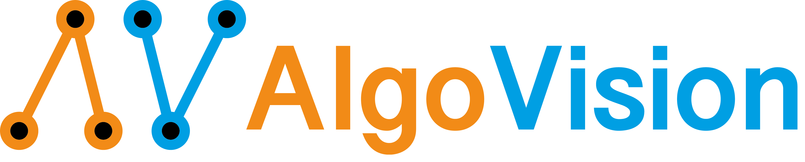

Welcome to the documentation of AlgoVision!
A framework (or programming language) for smooth differentiable algorithms. That is, algorithms which are differentiable wrt. decisions in the algorithm and also differentiable wrt. indices used for indexing.
It is the official implementation of our NeurIPS 2021 Paper “Learning with Algorithmic Supervision via Continuous Relaxations” (Paper @ ArXiv and Video @ Youtube).
Documentation